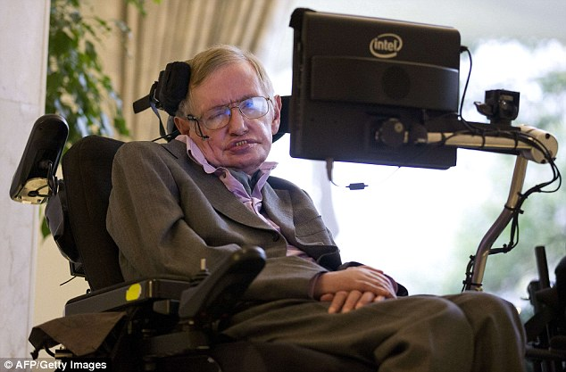

(Stephen Hawking lost his ability to speak in 1985)

Stephen Hawking first met Gordon Moore, the cofounder of Intel. Moore noticed that Hawking's computer, which he used to communicate, had an AMD processor and asked him if he preferred instead a "real computer" with an Intel micro-processor.
Stephen got agreed, then Moore asked Justin Rattner, to assemble a team of experts on human-computer interaction from Intel Labs, which he brought over to Cambridge for Hawking's 70th birthday conference.
At the time, Hawking's computer interface was a program called EZ Keys, which provided him with a keyboard on the screen and a basic word-prediction algorithm. A cursor automatically scanned across the keyboard by row or by column and he could select a character by moving his cheek to stop the cursor.He surfed the web with Firefox and wrote his lectures using Notepad. He also had a webcam that he used with Skype.
The problem that Hawking had with his user interface: missed key-hits. "Stephen often hit the wrong key by hitting the letter adjacent to the one he wanted".
To address the missed key-hits, the Intel team added a prototype that would interpret Hawking's intentions, rather than his actual input.
In June that year, Hawking visited Intel Labs, where Denman and his team introduced him to the new system, initially called ASTER (for ASsistive Text EditoR).
Further, The new version of Hawking's user interface (now called ACAT, Assistive Contextually Aware Toolkit) includes contextual menus that provide Hawking with various shortcuts to speak, search or email; and a new lecture manager, which gives him control over the timing of his delivery during talks. It also has a mute button, a curious feature that allows Hawking to turn off his speech synthesiser. "Because he operates his switch with his cheek, if he's eating or travelling, he creates random output."
Current configuration:
Lenovo ThinkPad X220 Tablet (2 copies)
Intel® Core™ i7-2620M CPU @ 2.7GHzM
Intel® 150Gb Solid-State Drive 520 Series
Windows 7
Speech Synthesizers (3 copies):
Manufacturer - Speech Plus (Incorporated 1988, Mountain View, CA)
Model - CallText 5010